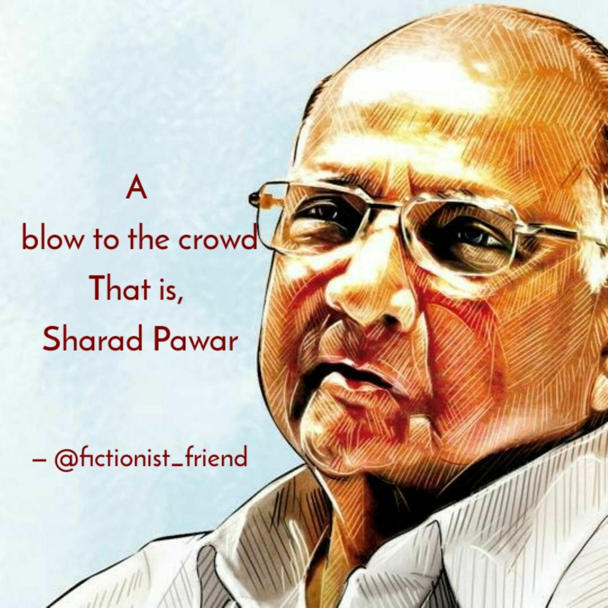
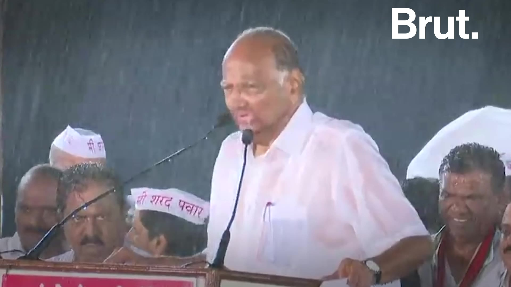

Sharad Govindrao Pawar , born 12 December 1940 is an Indian politician. He has served as the Chief Minister of Maharashtra on three occasions. He has held the posts of Minister of Defence and Minister of Agriculture in the Government of India. He is president of the Nationalist Congress Party (NCP), which he founded in 1999, after separating from the Indian National Congress. He leads the NCP delegation in the Rajya Sabha, the upper chamber of the Indian parliament. He is the chairperson of Maha Vikas Aghadi.
Pawar comes from Baramati of Maharashtra. He is the patriarch of Maharashtra's most influential political family. Other politicians from the family includes Supriya Sule,his daughter,Ajit Pawar,his nephew, Rohit Rajendra Pawar, a nephew's son, and other members of his extended family.
Outside of politics, Pawar served as the Chairman of the Board of Control for Cricket in India BCCI from 2005 to 2008 and as the president of the International Cricket Council from 2010 to 2012. He was the president of the Mumbai Cricket Association for many years.
In 2017, the Indian government conferred upon him Padma Vibhushan, the second-highest civilian honour of India.
want to know more????
Click here